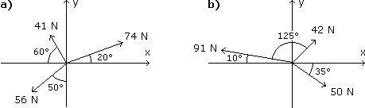
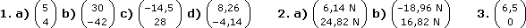

Vektorrechnung - Aufgaben 1
1.
Gegeben sind die Punkte A(–3|5), B(6|–1), C(2|9). Berechne die Vektoren
a` =
AB`,
b` =
BC` und
a) a` +
b`
b) 2
a` – 3
b`
c)
d) a` + 2
b`0
2.
Berechne die resultierende Kraft in Koordinatendarstellung mittels Vektoraddition.

3.
Bestimme den Ortsvektor B`, wenn der Punkt B auf der positiven x-Achse liegt und 7,5 Längeneinheiten vom Punkt A(2|6) entfernt ist.
4.
Das Dreieck ABC[ A(–4|–1), B(1|–5), C(2|2) ] wird am Punkt P(–3|1) gespiegelt. Wo liegt das gespiegelte Dreieck A'B'C'?
5.
A` liegt auf der positiven y-Achse und ist 7 Einheiten lang, B` liegt im ersten Quadranten, schließt mit der x-Achse 21° ein und ist 6 Einheiten lang. Wo liegt der Punkt C, der die Strecke AB innen im Verhältnis 3:5 teilt?
6.
Wo liegt der neue Endpunkt C, wenn man die Strecke AB[ A(1|–4), B(7|3) ] über B hinaus um 3 Einheiten verlängert?
7.
Vom Drachenviereck ABCD kennt man die Punkte A(–1|7), B(–2|3), D(3|6) und die Länge der Diagonale AC = 7. Wo liegt der Eckpunkt C?
8.
Errichte über der Strecke AB[ A(–3|1), B(5|–2) ] ein Rechteck ABCD (im Gegenuhrzeigersinn), dessen Seite BC halb so lang ist wie AB. Wo liegen die Eckpunkte C und D?
9.
Errichte über der Strecke AB[ A(–3|1), B(7|5) ] ein gleichschenkeliges Dreieck ABC (im Gegenuhrzeigersinn) mit Höhe hc = 3,5. Wo liegt der Eckpunkt C?
10.
Zeige für ein beliebiges Dreieck ABC, dass die Verbindung zweier Seitenmittelpunkte parallel zur dritten Seite und halb so lang wie diese ist.
11.
Zeige für ein beliebiges Viereck ABCD, dass die Seitenmittelpunkte die Eckpunkte eines Parallelogramms bilden.
Ergebnisse:

4. A'(–2|3), B'(–7|7), C'(–8|0)
5. C(2,10|5,18)
6. C(8,95|5,28)
7. C(2,60|1,00)
8. C(6,5|2), D(–1,5|5)
9. C(0,70|6,25)